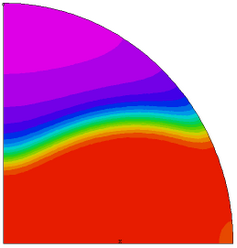

|
chemburn |

  
|
|
chemburn |
|
{ CHEMBURN.PDE
This problem models an extremely nonlinear chemical reaction in an open tube
reactor with a gas flowing through it. The problem illustrates the use of
FlexPDE to solve mixed boundary value - initial value problems and involves
the calculation of an extremely nonlinear chemical reaction.
While the solutions sought are the 3D steady state solutions, the problems
are mixed boundary value / initial value problems with vastly different
phenomena dominating in the radial and axial direction.
The equations model a cross-section of the reactor which flows with the
gas down the tube. There is therefore a one to one relation between the
time variable used in the equations and distance down the tube given by
z = v*t.
The chemical reaction has a reaction rate which is exponential in
temperature, and shows an explosive reaction completion, once an
'ignition' temperature is reached. The problem variable 'C' represents
the fractional conversion (with 1 representing reaction completion).
The reaction rate 'RC' is given by
RC(C,Temp) = (1-C)*exp[gamma*(1-1/Temp)]
where the parameter GAMMA is related to the activation energy of the
reaction.
The gas is initially at a temperature of 1, in our normalized units, with
convective cooling at the tube surface coupled to a cooling bath at a
temperature of 0.92.
The problem is cylindrically symmetric about the tube axis. Because of
the reaction the axis of the tube will remain hotter than the periphery,
and eventually the reaction will ignite on the tube axis, sending
completion and temperature fronts propagating out toward the wall. For
small GAMMA, these fronts are gentle, but for GAMMA greater than about
twelve the fronts becomes very steep and completion is reached rapidly
and sharply creating very rapid transition from a very high reaction rate
reaction rate to a zero reaction rate. The adaptive gridding and
adaptive evolution 'time' stepping capabilities of FlexPDE come into
play in this extreme nonlinear and process nonisotropic problem,
allowing a wave of dense gridding in time to accompany the completion
and temperature fronts across the tube.
In this problem we introduce a heating strip on the two vertical
faces of the tube, for a width of ten degrees of arc. These strips are
held at a temperature of 1.2, not much above the initial gas temperature.
The initial timesteps are held small while the abrupt temperature gradient
at the heating strips diffuses into the gas.
As the cross-section under study moves down the reactor, the heat generated
by the reaction combines with the heat diffusing in from the strip heater to cause
ignition at a point on the x-axis and cause the completion front and temperature
front to progate from this point across the cross-section.
We model only a quarter of the tube, with mirror planes on the X- and Y-axes.
The calculation models a cross-section of the tube, and this cross-section
flows with the gas down the tube.
The "cycle=10" plots allow us to see the flame-front propagating across
the volume, which happens very quickly, and would not be seen in a
time-interval sampling.
While the magnitudes of the numerical values used for the various
constants including gamma are representative of those found with real
reactions and real open tube reactors they are not meant to represent
a particular reaction or reactor.
}
title
'Open Tube Chemical Reactor with Strip Heater'
select
painted { make color-filled contour plots }
variables Temp(threshold=0.1) C(threshold=0.1)
definitions Lz = 1 r1=1 heat=0 gamma = 16 beta = 0.2 betap = 0.3 BI = 1 T0 = 1 TW = 0.92 { the very nasty reaction rate: } RC = (1-C)*exp(gamma-gamma/Temp) xev=0.96 { some plot points } yev=0.25
initial values Temp=T0 C=0 |
 |
equations
Temp: div(grad(Temp)) + heat + betap*RC = dt(Temp)
C: div(grad(C)) + beta*RC = dt(C)
boundaries
region 1
start (0,0)
{ a mirror plane on X-axis }
natural(Temp) = 0
natural(C) = 0
line to (r1,0)
{ "Strip Heater" at fixed temperature }
{ ramp the boundary temp in time, because discontinuity is costly to diffuse }
value(Temp)=T0 + 0.2*uramp(t,t-0.05)
natural(C)=0 { no mass flow on strip heater }
arc(center=0,0) angle 5
{ convective cooling and no mass flow on outer arc }
natural(Temp)=BI*(TW-Temp)
natural(C)=0
arc(center=0,0) angle 85
{ a mirror plane on Y-axis }
natural(Temp) = 0
natural(C) = 0
line to (0,0) to close
time 0 to 1
plots
for cycle=10 { watch the fast events by cycle }
grid(x,y)
contour(Temp)
contour(C) as "Completion"
for t= 0.2 by 0.05 to 0.3 { show some surfaces during burn }
surface(Temp)
surface(C) as "Completion"
histories
history(Temp) at (0,0) (xev/2,yev/2) (xev,yev) (yev/2,xev/2) (yev,xev)
history(C) at (0,0) (xev/2,yev/2) (xev,yev) (yev/2,xev/2) (yev,xev) as "Completion"
end